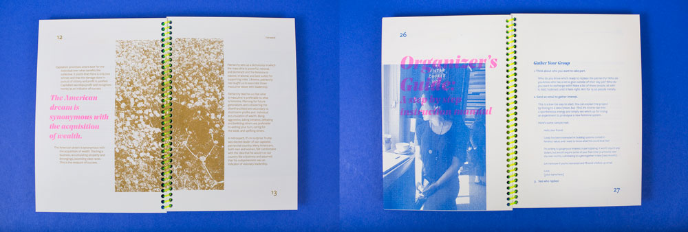
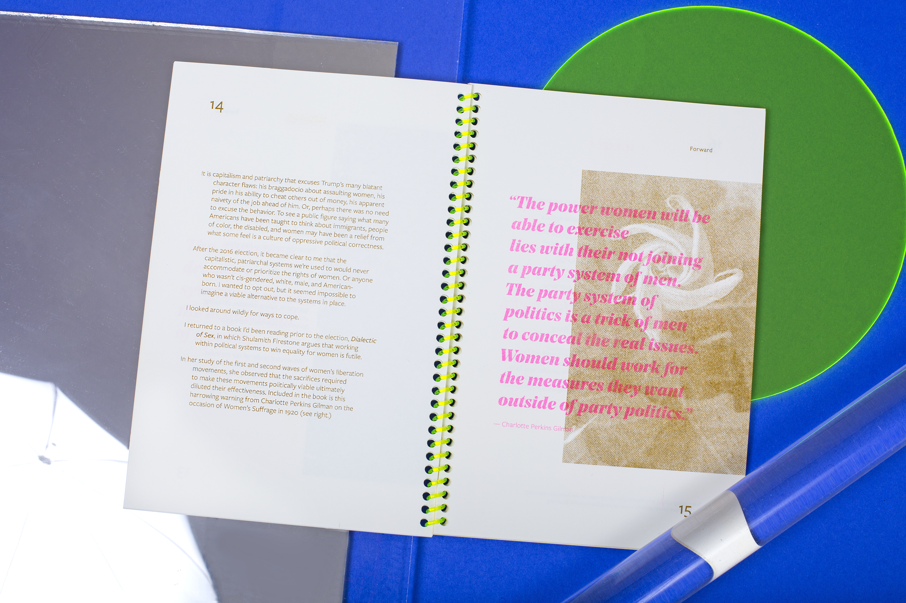

Inspired by Jennifer Armbrust's Proposals for the Feminine Economy, I wanted to know what a system rooted in feminine values might look like.
I wanted to see if it was possible to build new systems to replace the old.
I tried this experiment in April 2017 and 18 people participated.
We practiced a new way of being together and exchanging
what we have in abundance.
Then - I wrote about it! The Feminine Economy Exchange Guide is a summary and toolkit so
you can replicate your own feminine economy and build new systems wherever you are.

Available for purchase here and in San Francisco at Little Paper Planes.

Here's me talking about the project and feminine values on Astral Projection Radio Hour- a fantastic weekly show Tuesdays 4-6pm on BFF.fm.